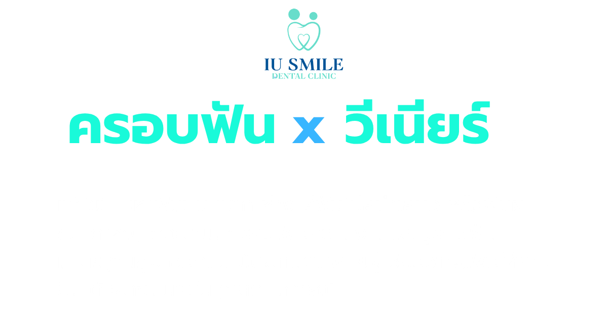
นัดหมายปรึกษา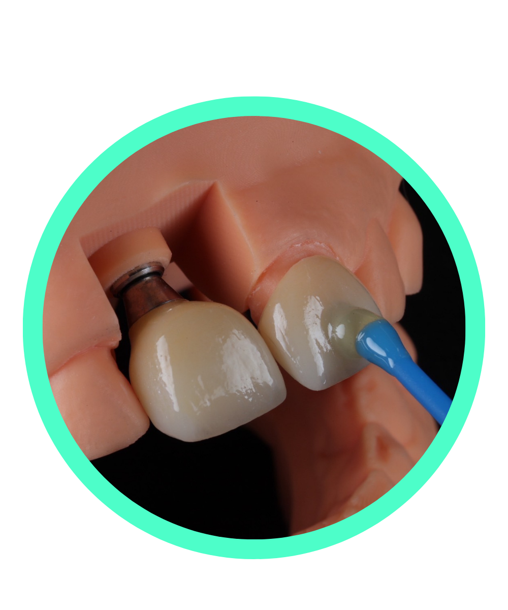
การทำครอบฟัน (Dental Crown) คือการบูรณะฟันที่ได้รับความเสียหายอย่างหนัก โดยใช้วัสดุทางทันตกรรมที่ออกแบบให้มีรูปร่าง สี และขนาดใกล้เคียงกับฟันธรรมชาติ สวมคลุมทับลงไปบนตัวฟันซี่นั้นทั้งซี่ เพื่อทำหน้าที่เป็นเกราะปกป้องโครงสร้างเนื้อฟันที่เหลืออยู่ คืนความแข็งแรง และปรับรูปร่างฟันให้กลับมาสวยงามพร้อมใช้งานบดเคี้ยวได้อย่างมีประสิทธิภาพ
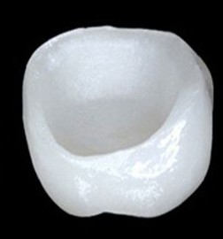
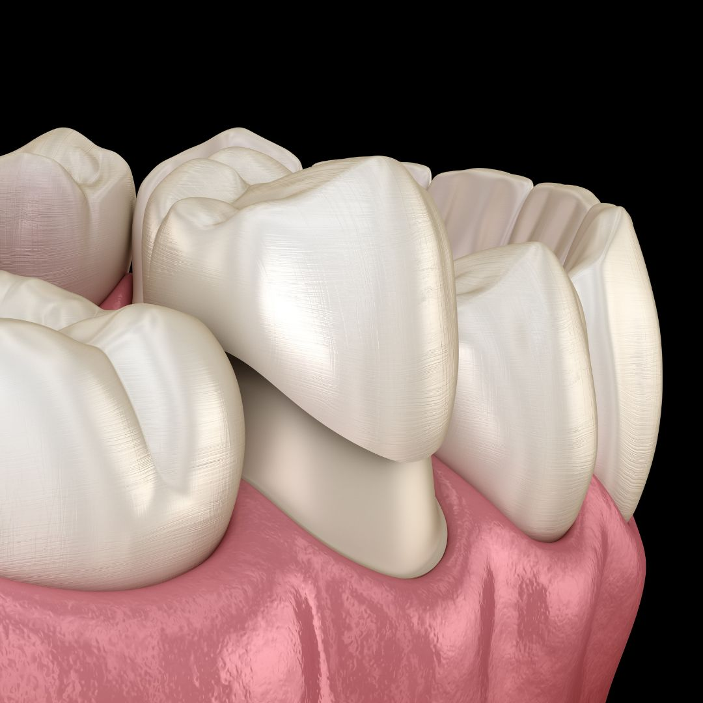
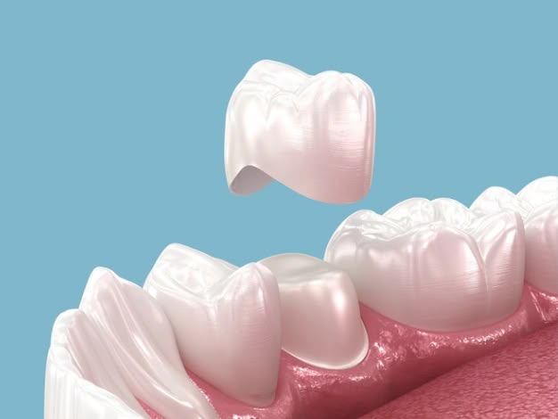

ฟันที่สูญเสียเนื้อฟันไปมากจนไม่สามารถใช้วัสดุอุดฟันปกติยึดเกาะได้แข็งแรงพอ
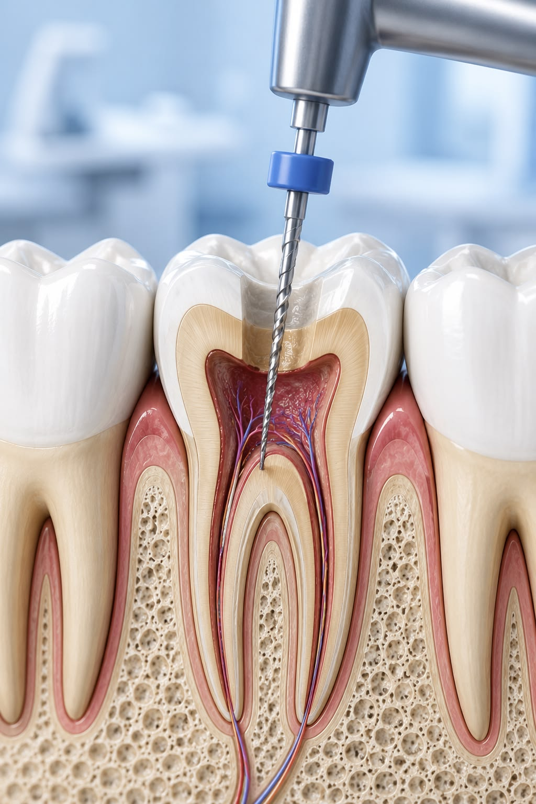
จากพฤติกรรมการนอนกัดฟันหรือการรับประทานอาหารที่มีกรดสูงจนฟันสั้นลงและมีอาการเสียวฟัน
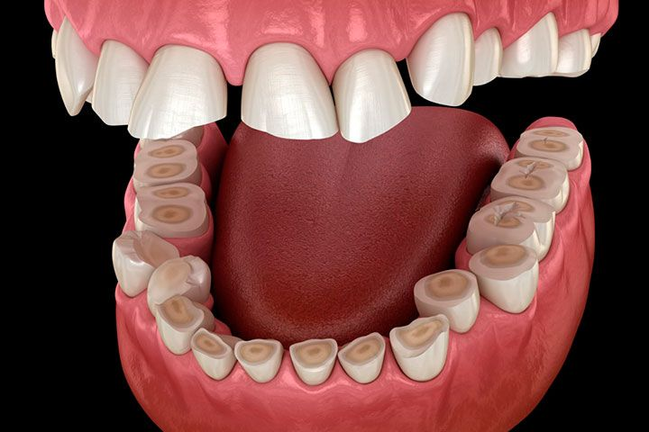
จากพฤติกรรมการนอนกัดฟันหรือการรับประทานอาหารที่มีกรดสูงจนฟันสั้นลงและมีอาการเสียวฟัน
ปรับแต่งรูปร่างฟันที่ผิดปกติ ฟันที่มีสีคล้ำเข้ม หรือใช้เป็นหลักยึดสำหรับการทำสะพานฟันและครอบบนรากฟันเทียม
แข็งแรง ทนทาน: ทนต่อแรงบดเคี้ยวได้ดีเยี่ยม เหมาะกับทั้งฟันหน้าและฟันกราม
ความสวยงามสูงและเป็นธรรมชาติ: แสงสามารถส่องผ่านได้ดี (โดยเฉพาะรุ่นโปร่งแสง) ทำให้ดูเนียนกลืนกับฟันจริง
เข้ากันได้ดีกับร่างกาย: ลดโอกาสการเกิดอาการแพ้โลหะหรือการระคายเคืองเหงือก
ไม่มีปัญหาขอบเหงือกดำ: เนื่องจากไม่มีส่วนผสมของโลหะ เมื่อเวลาผ่านไปหากเหงือกร่น จะไม่เห็นขอบโลหะสีเทาดำบริเวณคอฟัน
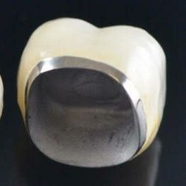
แข็งแรงทนทาน: โครงโลหะด้านในช่วยให้รองรับแรงบดเคี้ยวได้ดี
ราคาประหยัด: มีต้นทุนและค่าใช้จ่ายต่ำกว่าครอบฟันเซรามิกล้วนอย่างเซอร์โคเนีย
ปัญหาขอบเหงือกดำ: เมื่อเหงือกร่นตามวัย จะเห็นเงาหรือเส้นโลหะสีเทาดำบริเวณคอฟัน
ความสวยงามน้อยกว่า (ทึบแสงกว่า) มีโอกาสที่ชั้นเซรามิกด้านนอกจะบิ่นหรือกะเทาะได้
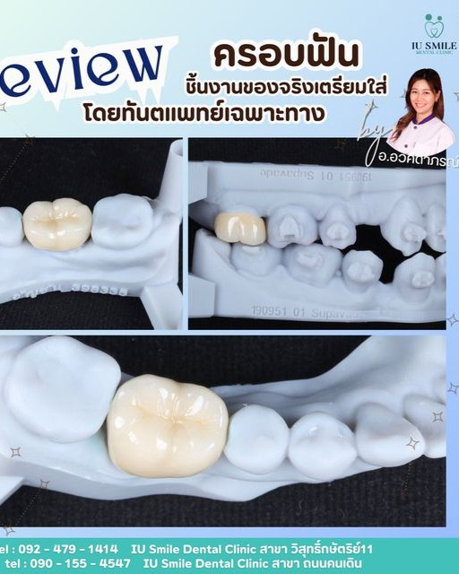
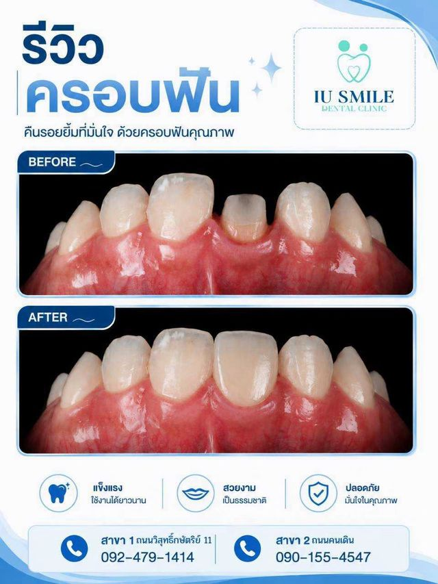
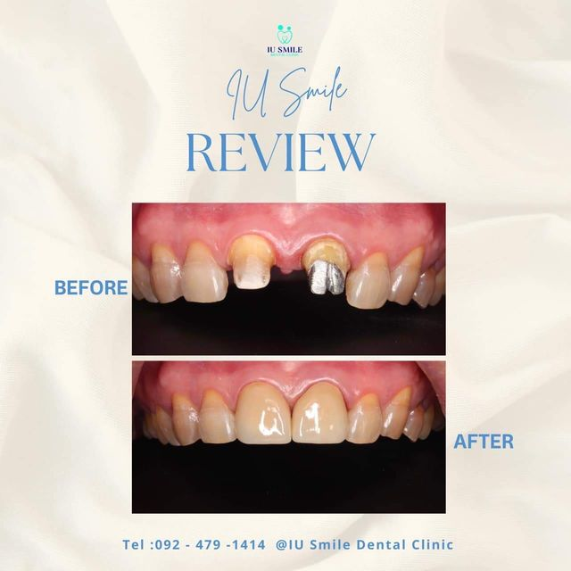
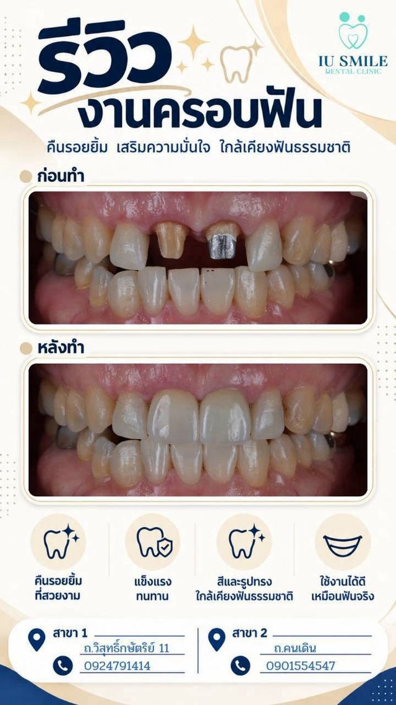
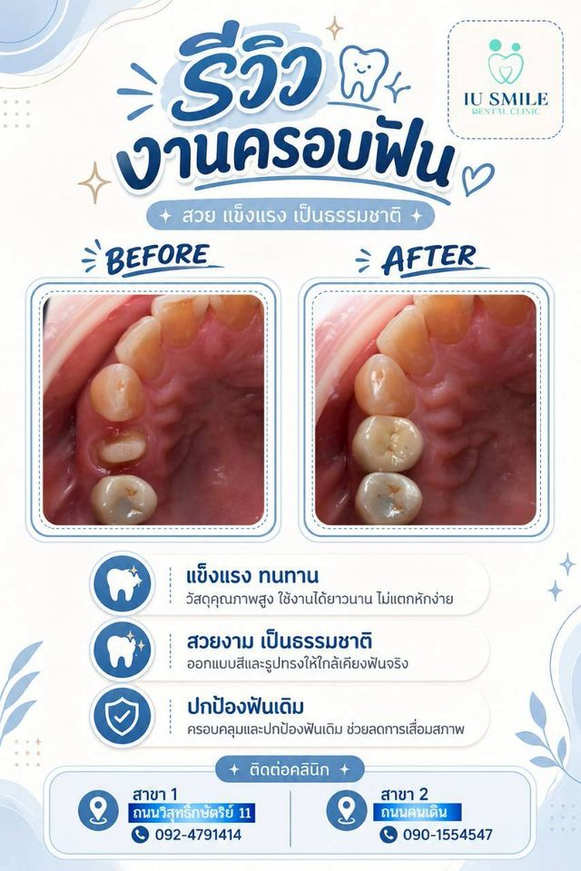
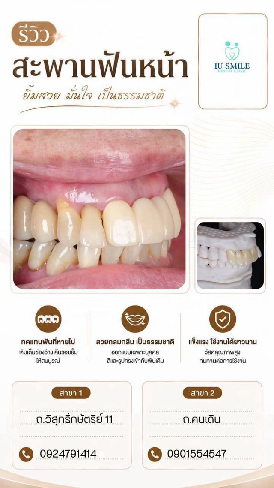
การทำวีเนียร์ (Dental Veneer) หรือการเคลือบผิวฟันเทียม คือนวัตกรรมทางทันตกรรมเพื่อความงาม (Cosmetic Dentistry) โดยการใช้วัสดุแผ่นบางๆ ที่ออกแบบมาให้มีรูปร่าง ขนาด และสีกลมกลืนกับฟันธรรมชาติ นำมาแปะติดลงบนผิวหน้าฟัน เพื่อปกปิดข้อบกพร่องและปรับแต่งรอยยิ้มให้สวยงามสมบูรณ์แบบ เปรียบเสมือนการติดเกราะป้องกันหรือสวมหน้ากากให้ผิวฟันใหม่
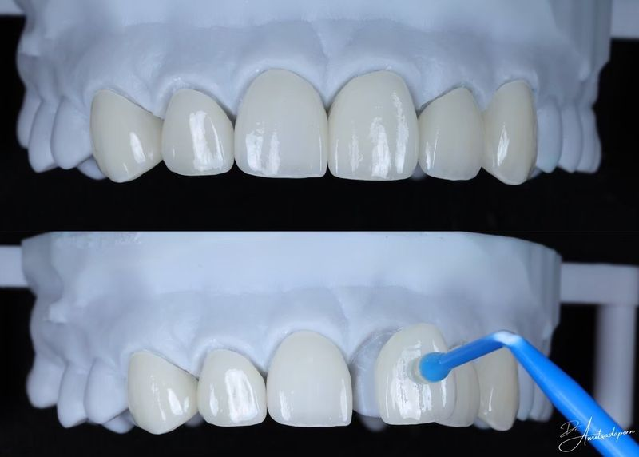
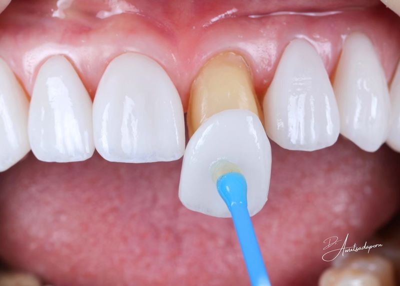
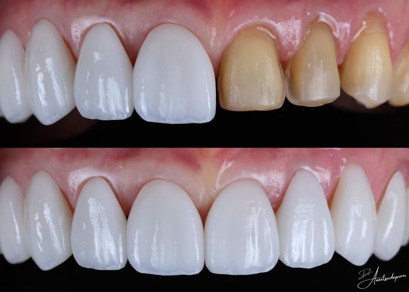
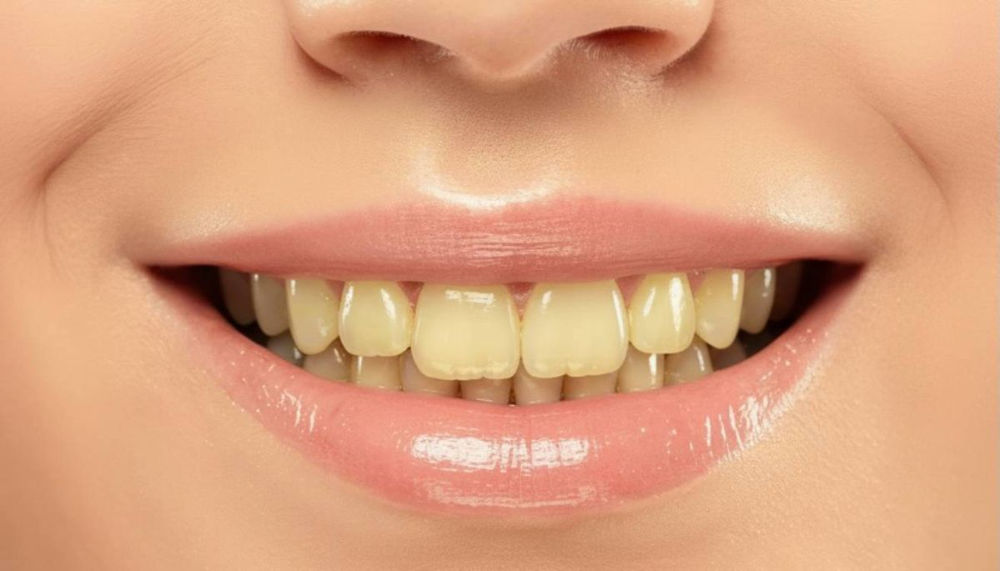
ฟันเหลือง ฟันตกกระ หรือฟันคล้ำจากผลข้างเคียงของยา (เช่น ยาเตตราไซคลีน) ที่ไม่สามารถแก้ไขให้ขาวขึ้นได้ด้วยการฟอกสีฟันตามปกติ
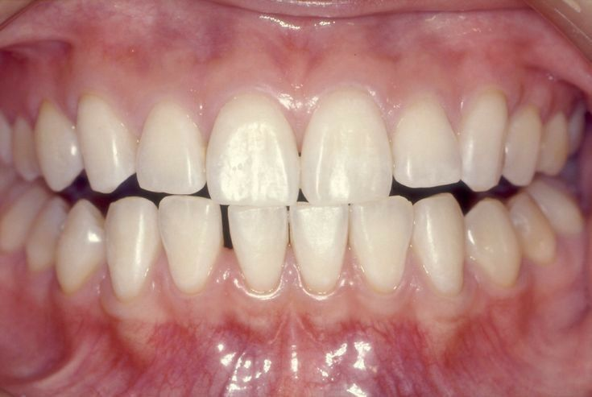
ช่วยเติมเต็มโครงสร้างบริเวณปลายฟันหน้าให้กลับมาสมบูรณ์ สามารถออกแบบขนาดแผ่นวีเนียร์เพื่อช่วยปิดช่องว่างระหว่างซี่ฟันหน้าได้โดยไม่ต้องเข้ารับการจัดฟัน
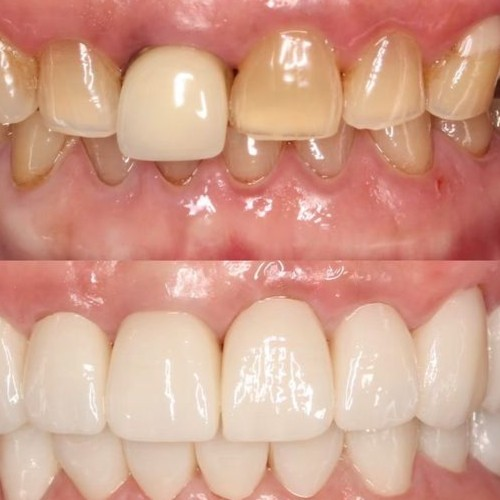
ฟันบิดซ้อนเกเล็กน้อย หรือฟันที่มีขนาดและรูปร่างไม่สมมาตร ไม่รับกับโครงหน้าและริมฝีปาก
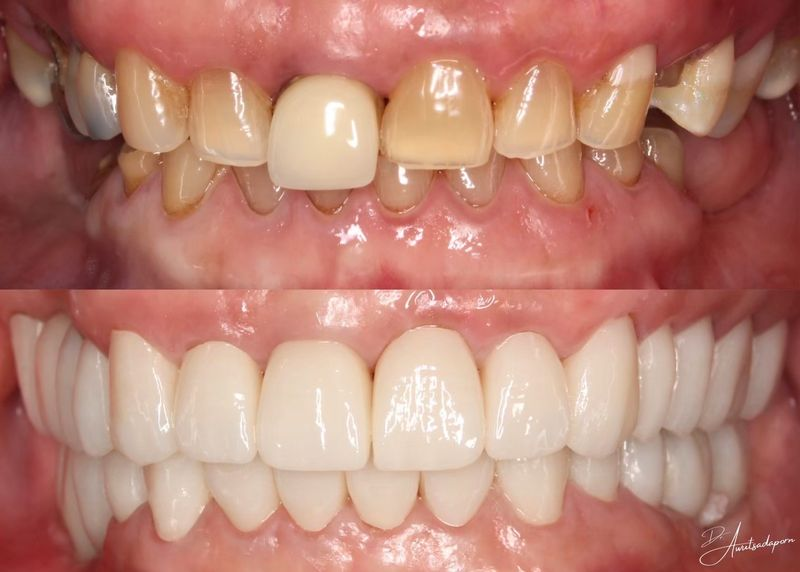
แผ่นวีเนียร์ที่ทำจากวัสดุเซรามิกคุณภาพสูง โดยทันตแพทย์จะพิมพ์ปากและส่งให้ห้องปฏิบัติการ (Lab) ผลิตขึ้นมาเฉพาะบุคคล เพื่อนำมาแปะติดถาวรที่ผิวหน้าฟัน
ความสวยงามและความเป็นธรรมชาติสูงมาก เนื้อเซรามิกมีความโปร่งแสงและสะท้อนแสงใกล้เคียงกับเคลือบฟันธรรมชาติ ทำให้ดูเนียนกลืนจนแทบแยกไม่ออก
ทนทานต่อการติดสีและคราบต่างๆ: ผิวมีความเรียบเนียนแน่น ทำให้คราบจากชา กาแฟ หรือบุหรี่ไม่ฝังตัวหรือเปลี่ยนสีได้ง่าย คงความขาวได้ยาวนาน
อายุการใช้งานยาวนาน:หากดูแลรักษาความสะอาดเป็นอย่างดี สามารถใช้งานได้ยาวนานถึง 10-15 ปีขึ้นไปและหลายกรณีสามารถอยู่ในนานกว่านั้น

วีเนียร์ที่ทำจากวัสดุเรซินคอมโพสิต (วัสดุชนิดเดียวกับที่ใช้ในการอุดฟันสีเหมือนฟัน) โดยทันตแพทย์จะทำการปั้นแต่งวัสดุและเคลือบลงบนผิวฟันโดยตรงที่คลินิก
ราคาประหยัดกว่า: มีต้นทุนและค่าใช้จ่ายถูกกว่าแบบเซรามิกอย่างเห็นได้ชัด เหมาะสำหรับผู้ที่ต้องการประหยัดงบประมาณ
เสร็จรวดเร็วภายในครั้งเดียว:ทันตแพทย์สามารถทำเสร็จได้จบในนัดเดียว ไม่ต้องรอชิ้นงานจากห้องปฏิบัติการ Lab
: มีอายุการใช้งานสั้นกว่า Ceramic Veneer ละดูดซับคราบสีรวมถึงสูญเสียความเงางามได้ง่าย ทำให้ต้องคอยขัดผิว ซ่อมแซม หรือเปลี่ยนใหม่บ่อยกว่าแบบเซรามิกครับ
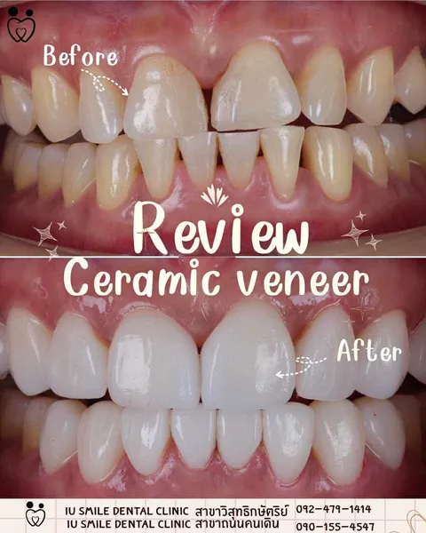
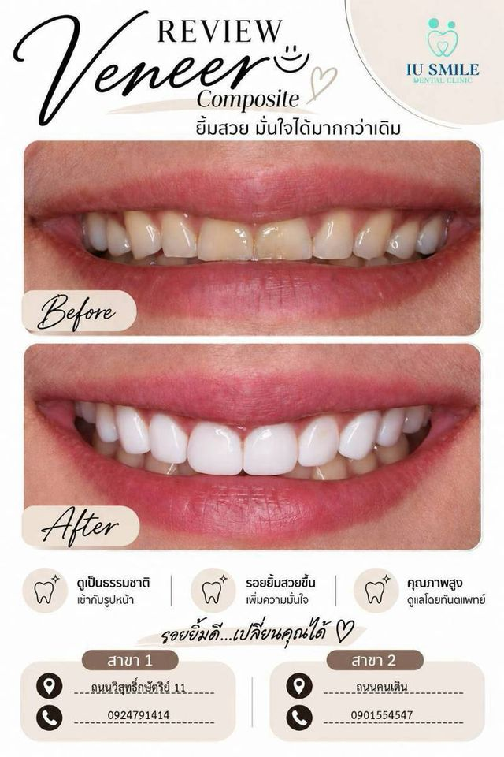
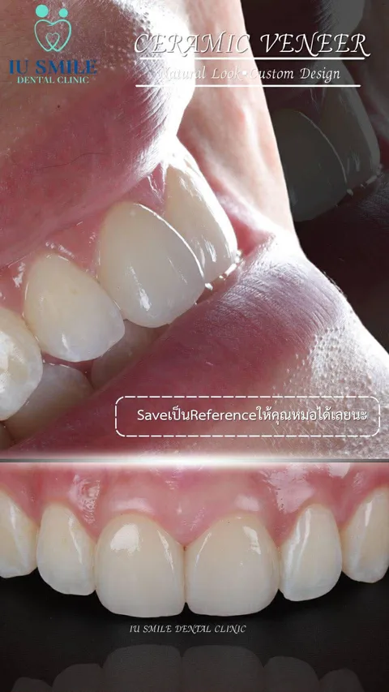
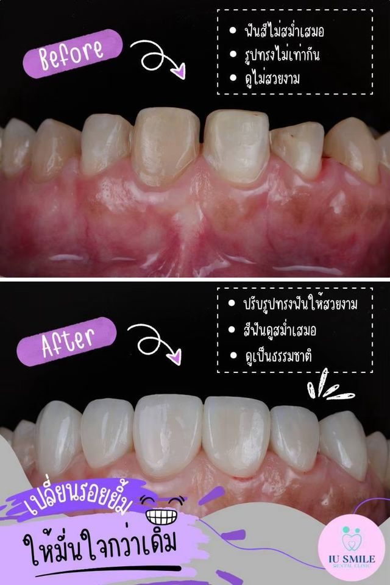
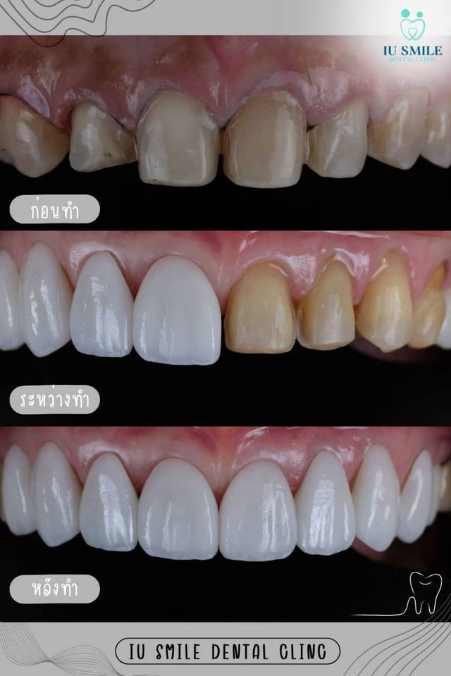
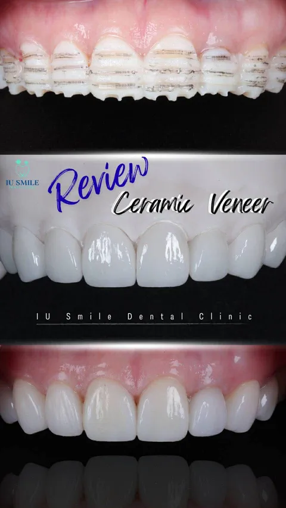